Vector Autoregressions tsa.vector_ar¶
VAR(p) processes¶
We are interested in modeling a 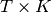 multivariate time series 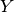, where 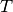 denotes the number of observations and 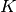 the number of variables. One way of estimating relationships between the time series and their lagged values is the vector autoregression process:
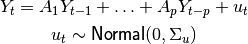
where 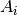 is a 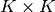 coefficient matrix.
We follow in large part the methods and notation of Lutkepohl (2005), which we will not develop here.
Model fitting¶
Note
The classes referenced below are accessible via the
statsmodels.tsa.api module.
To estimate a VAR model, one must first create the model using an ndarray of homogeneous or structured dtype. When using a structured or record array, the class will use the passed variable names. Otherwise they can be passed explicitly:
# some example data
>>> import pandas
>>> mdata = sm.datasets.macrodata.load_pandas().data
# prepare the dates index
>>> dates = mdata[['year', 'quarter']].astype(int).astype(str)
>>> quarterly = dates["year"] + "Q" + dates["quarter"]
>>> from statsmodels.tsa.base.datetools import dates_from_str
>>> quarterly = dates_from_str(quarterly)
>>> mdata = mdata[['realgdp','realcons','realinv']]
>>> mdata.index = pandas.DatetimeIndex(quarterly)
>>> data = np.log(mdata).diff().dropna()
# make a VAR model
>>> model = VAR(data)
Note
The VAR class assumes that the passed time series are
stationary. Non-stationary or trending data can often be transformed to be
stationary by first-differencing or some other method. For direct analysis of
non-stationary time series, a standard stable VAR(p) model is not
appropriate.
To actually do the estimation, call the fit method with the desired lag order. Or you can have the model select a lag order based on a standard information criterion (see below):
>>> results = model.fit(2)
>>> results.summary()
Summary of Regression Results
==================================
Model: VAR
Method: OLS
Date: Fri, 08, Jul, 2011
Time: 11:30:22
--------------------------------------------------------------------
No. of Equations: 3.00000 BIC: -27.5830
Nobs: 200.000 HQIC: -27.7892
Log likelihood: 1962.57 FPE: 7.42129e-13
AIC: -27.9293 Det(Omega_mle): 6.69358e-13
--------------------------------------------------------------------
Results for equation realgdp
==============================================================================
coefficient std. error t-stat prob
------------------------------------------------------------------------------
const 0.001527 0.001119 1.365 0.174
L1.realgdp -0.279435 0.169663 -1.647 0.101
L1.realcons 0.675016 0.131285 5.142 0.000
L1.realinv 0.033219 0.026194 1.268 0.206
L2.realgdp 0.008221 0.173522 0.047 0.962
L2.realcons 0.290458 0.145904 1.991 0.048
L2.realinv -0.007321 0.025786 -0.284 0.777
==============================================================================
Results for equation realcons
==============================================================================
coefficient std. error t-stat prob
------------------------------------------------------------------------------
const 0.005460 0.000969 5.634 0.000
L1.realgdp -0.100468 0.146924 -0.684 0.495
L1.realcons 0.268640 0.113690 2.363 0.019
L1.realinv 0.025739 0.022683 1.135 0.258
L2.realgdp -0.123174 0.150267 -0.820 0.413
L2.realcons 0.232499 0.126350 1.840 0.067
L2.realinv 0.023504 0.022330 1.053 0.294
==============================================================================
Results for equation realinv
==============================================================================
coefficient std. error t-stat prob
------------------------------------------------------------------------------
const -0.023903 0.005863 -4.077 0.000
L1.realgdp -1.970974 0.888892 -2.217 0.028
L1.realcons 4.414162 0.687825 6.418 0.000
L1.realinv 0.225479 0.137234 1.643 0.102
L2.realgdp 0.380786 0.909114 0.419 0.676
L2.realcons 0.800281 0.764416 1.047 0.296
L2.realinv -0.124079 0.135098 -0.918 0.360
==============================================================================
Correlation matrix of residuals
realgdp realcons realinv
realgdp 1.000000 0.603316 0.750722
realcons 0.603316 1.000000 0.131951
realinv 0.750722 0.131951 1.000000
Several ways to visualize the data using matplotlib are available.
Plotting input time series:
>>> results.plot()
(Source code, png, hires.png, pdf)
{kind=link}
{kind=link}
Plotting time series autocorrelation function:
>>> results.plot_acorr()
(Source code, png, hires.png, pdf)
{kind=link}
{kind=link}
Lag order selection¶
Choice of lag order can be a difficult problem. Standard analysis employs
likelihood test or information criteria-based order selection. We have
implemented the latter, accessable through the VAR class:
>>> model.select_order(15)
VAR Order Selection
======================================================
aic bic fpe hqic
------------------------------------------------------
0 -27.70 -27.65 9.358e-13 -27.68
1 -28.02 -27.82* 6.745e-13 -27.94*
2 -28.03 -27.66 6.732e-13 -27.88
3 -28.04* -27.52 6.651e-13* -27.83
4 -28.03 -27.36 6.681e-13 -27.76
5 -28.02 -27.19 6.773e-13 -27.69
6 -27.97 -26.98 7.147e-13 -27.57
7 -27.93 -26.79 7.446e-13 -27.47
8 -27.94 -26.64 7.407e-13 -27.41
9 -27.96 -26.50 7.280e-13 -27.37
10 -27.91 -26.30 7.629e-13 -27.26
11 -27.86 -26.09 8.076e-13 -27.14
12 -27.83 -25.91 8.316e-13 -27.05
13 -27.80 -25.73 8.594e-13 -26.96
14 -27.80 -25.57 8.627e-13 -26.90
15 -27.81 -25.43 8.599e-13 -26.85
======================================================
* Minimum
{'aic': 3, 'bic': 1, 'fpe': 3, 'hqic': 1}
When calling the fit function, one can pass a maximum number of lags and the order criterion to use for order selection:
>>> results = model.fit(maxlags=15, ic='aic')
Forecasting¶
The linear predictor is the optimal h-step ahead forecast in terms of mean-squared error:
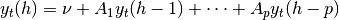
We can use the forecast function to produce this forecast. Note that we have to specify the “initial value” for the forecast:
>>> lag_order = results.k_ar
>>> results.forecast(data.values[-lag_order:], 5)
array([[ 0.00616044, 0.00500006, 0.00916198],
[ 0.00427559, 0.00344836, -0.00238478],
[ 0.00416634, 0.0070728 , -0.01193629],
[ 0.00557873, 0.00642784, 0.00147152],
[ 0.00626431, 0.00666715, 0.00379567]])
The forecast_interval function will produce the above forecast along with asymptotic standard errors. These can be visualized using the plot_forecast function:
(Source code, png, hires.png, pdf)
{kind=link}
{kind=link}
Impulse Response Analysis¶
Impulse responses are of interest in econometric studies: they are the estimated responses to a unit impulse in one of the variables. They are computed in practice using the MA(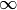) representation of the VAR(p) process:
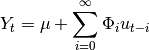
We can perform an impulse response analysis by calling the irf function on a VARResults object:
>>> irf = results.irf(10)
These can be visualized using the plot function, in either orthogonalized or non-orthogonalized form. Asymptotic standard errors are plotted by default at the 95% significance level, which can be modified by the user.
Note
Orthogonalization is done using the Cholesky decomposition of the estimated error covariance matrix 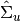 and hence interpretations may change depending on variable ordering.
>>> irf.plot(orth=False)
(Source code, png, hires.png, pdf)
{kind=link}
{kind=link}
Note the plot function is flexible and can plot only variables of interest if so desired:
>>> irf.plot(impulse='realgdp')
The cumulative effects 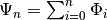 can be plotted with the long run effects as follows:
>>> irf.plot_cum_effects(orth=False)
(Source code, png, hires.png, pdf)
{kind=link}
{kind=link}
Forecast Error Variance Decomposition (FEVD)¶
Forecast errors of component j on k in an i-step ahead forecast can be decomposed using the orthogonalized impulse responses 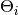:
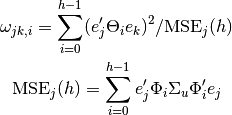
These are computed via the fevd function up through a total number of steps ahead:
>>> fevd = results.fevd(5)
>>> fevd.summary()
FEVD for realgdp
realgdp realcons realinv
0 1.000000 0.000000 0.000000
1 0.864889 0.129253 0.005858
2 0.816725 0.177898 0.005378
3 0.793647 0.197590 0.008763
4 0.777279 0.208127 0.014594
FEVD for realcons
realgdp realcons realinv
0 0.359877 0.640123 0.000000
1 0.358767 0.635420 0.005813
2 0.348044 0.645138 0.006817
3 0.319913 0.653609 0.026478
4 0.317407 0.652180 0.030414
FEVD for realinv
realgdp realcons realinv
0 0.577021 0.152783 0.270196
1 0.488158 0.293622 0.218220
2 0.478727 0.314398 0.206874
3 0.477182 0.315564 0.207254
4 0.466741 0.324135 0.209124
They can also be visualized through the returned FEVD object:
>>> results.fevd(20).plot()
(Source code, png, hires.png, pdf)
{kind=link}
{kind=link}
Statistical tests¶
A number of different methods are provided to carry out hypothesis tests about the model results and also the validity of the model assumptions (normality, whiteness / “iid-ness” of errors, etc.).
Granger causality¶
One is often interested in whether a variable or group of variables is “causal”
for another variable, for some definition of “causal”. In the context of VAR
models, one can say that a set of variables are Granger-causal within one of the
VAR equations. We will not detail the mathematics or definition of Granger
causality, but leave it to the reader. The VARResults object has the
test_causality method for performing either a Wald (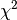) test or an
F-test.
>>> results.test_causality('realgdp', ['realinv', 'realcons'], kind='f')
Granger causality f-test
=============================================================
Test statistic Critical Value p-value df
-------------------------------------------------------------
6.999888 2.114554 0.000 (6, 567)
=============================================================
H_0: ['realinv', 'realcons'] do not Granger-cause realgdp
Conclusion: reject H_0 at 5.00% significance level
[88]:
{'conclusion': 'reject',
'crit_value': 2.1145543864562706,
'df': (6, 567),
'pvalue': 3.3805963773886478e-07,
'signif': 0.05,
'statistic': 6.9998875522543473}
Normality¶
Whiteness of residuals¶
Dynamic Vector Autoregressions¶
Note
To use this functionality, pandas must be installed. See the pandas documentation for more information on the below data structures.
One is often interested in estimating a moving-window regression on time series data for the purposes of making forecasts throughout the data sample. For example, we may wish to produce the series of 2-step-ahead forecasts produced by a VAR(p) model estimated at each point in time.
>>> data
<class 'pandas.core.frame.DataFrame'>
Index: 500 entries , 2000-01-03 00:00:00 to 2001-11-30 00:00:00
A 500 non-null values
B 500 non-null values
C 500 non-null values
D 500 non-null values
>>> var = DynamicVAR(data, lag_order=2, window_type='expanding')
The estimated coefficients for the dynamic model are returned as a
pandas.WidePanel object, which can allow you to easily examine, for
example, all of the model coefficients by equation or by date:
>>> var.coefs
<class 'pandas.core.panel.WidePanel'>
Dimensions: 9 (items) x 489 (major) x 4 (minor)
Items: L1.A to intercept
Major axis: 2000-01-18 00:00:00 to 2001-11-30 00:00:00
Minor axis: A to D
# all estimated coefficients for equation A
>>> var.coefs.minor_xs('A').info()
Index: 489 entries , 2000-01-18 00:00:00 to 2001-11-30 00:00:00
Data columns:
L1.A 489 non-null values
L1.B 489 non-null values
L1.C 489 non-null values
L1.D 489 non-null values
L2.A 489 non-null values
L2.B 489 non-null values
L2.C 489 non-null values
L2.D 489 non-null values
intercept 489 non-null values
dtype: float64(9)
# coefficients on 11/30/2001
>>> var.coefs.major_xs(datetime(2001, 11, 30)).T
A B C D
L1.A 0.9567 -0.07389 0.0588 -0.02848
L1.B -0.00839 0.9757 -0.004945 0.005938
L1.C -0.01824 0.1214 0.8875 0.01431
L1.D 0.09964 0.02951 0.05275 1.037
L2.A 0.02481 0.07542 -0.04409 0.06073
L2.B 0.006359 0.01413 0.02667 0.004795
L2.C 0.02207 -0.1087 0.08282 -0.01921
L2.D -0.08795 -0.04297 -0.06505 -0.06814
intercept 0.07778 -0.283 -0.1009 -0.6426
Dynamic forecasts for a given number of steps ahead can be produced using the
forecast function and return a pandas.DataMatrix object:
>>> In [76]: var.forecast(2)
A B C D
<snip>
2001-11-23 00:00:00 -6.661 43.18 33.43 -23.71
2001-11-26 00:00:00 -5.942 43.58 34.04 -22.13
2001-11-27 00:00:00 -6.666 43.64 33.99 -22.85
2001-11-28 00:00:00 -6.521 44.2 35.34 -24.29
2001-11-29 00:00:00 -6.432 43.92 34.85 -26.68
2001-11-30 00:00:00 -5.445 41.98 34.87 -25.94
The forecasts can be visualized using plot_forecast:
>>> var.plot_forecast(2)
Class Reference¶
var_model.VAR(endog[, dates, freq, missing]) |
Fit VAR(p) process and do lag order selection |
var_model.VARProcess(coefs, intercept, sigma_u) |
Class represents a known VAR(p) process |
var_model.VARResults(endog, endog_lagged, ...) |
Estimate VAR(p) process with fixed number of lags |
irf.IRAnalysis(model[, P, periods, order, svar]) |
Impulse response analysis class. |
var_model.FEVD(model[, P, periods]) |
Compute and plot Forecast error variance decomposition and asymptotic |
dynamic.DynamicVAR(data[, lag_order, ...]) |
Estimates time-varying vector autoregression (VAR(p)) using |